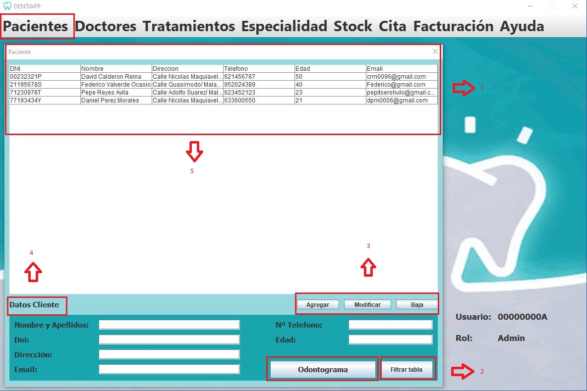

Esta es la página de Gestión de Paciente. A ella tiene acceso el Administrador y el Doctor, este ultimo podrá visualizar los datos pero solo el administrador podra interactuar con ella
En esta página, el doctor podrá ver una tabla con los datos de los paciente y un odontograma donde verá el progreso de este y podra asignar cita.
A continuación, se mostrará el diseño de nuestra interfaz, señalizando y explicando la funcionalidad de los distintos
elementos destacables:

Listado de elementos:
-
Tabla:Está conectada a la base de datos "Pacientes", y nos permite visualizar el
contenido de este. Donde tendremos los datos personales de los paciente. El doctor tendrá todos los datos en su mano pero no los puede modificar.
Solo el administrador puede modificar datos personales.
-
Botón "Agragar, modificar, baja":Estos botones realizan su accion correspondiente a los paciente, la cual esta disponible solamente si entramos.
como admnistrador.
-
Botón "Odontograma":Este es utilizado mayoritariamente por el doctor, el cual puede observar y modificar las acciones que hay sobre el paciente.
-
Botón "Filtrar Tabla":Tanto el administrador como el doctor puede buscar al paciente conociendo su DNI y se les mostrara en la ventana ya filtrado.
-
Cuadro de texto "Datos Cliente":En él se mostrará todos los datos de paciente seleccionado .